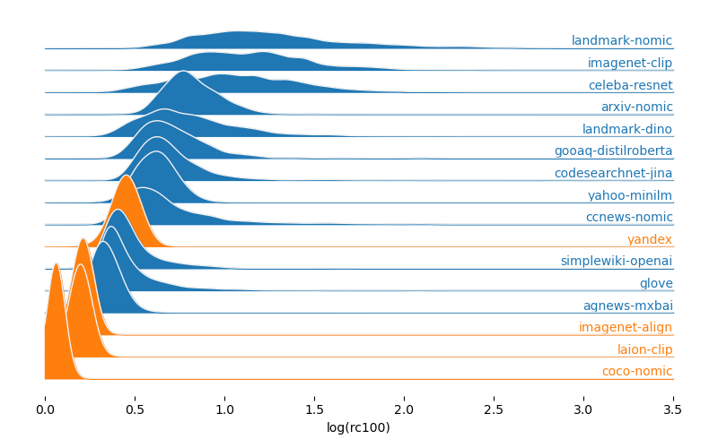

In the VIBE benchmark we consider datasets whose queries are both in-distribution and out-of-distribution.
The following table reports information about the size and dimensionality of each dataset, along with links that allow to download them.
db = DuckDBClient.of({vizdata:FileAttachment("results/data-pca-mahalanobis.parquet"),stats:FileAttachment("results/stats.parquet"),basics: {file:FileAttachment("dataset_basics.csv"),header:true},info:FileAttachment("results/data-info.parquet")});id_datasets = db.sql`select * from basics natural join info where type = 'in-distribution' order by dataset`;ood_datasets = db.sql`select * from basics natural join info where type = 'out-of-distribution' order by dataset`;datasets = db.sql`select * from basics natural join info where type in ('in-distribution', 'out-of-distribution') order by type, dataset`;colors =Array.from(d3["schemeTableau10"]).toReversed();
Here below we report the first two PCA components of data and queries for each dataset. Selecting a dataset in the table above allows to update the visualization.
Along with the PCA we display the distribution of Mahalanobis distances between the data points and the data and the query points and the data.
selected_data = db.sql`select * from vizdata where dataset = ${selected_dataset.dataset}`;kde =require('fast-kde');distances_data = db.sql`select mahalanobis_distance_to_data from vizdata where dataset = ${selected_dataset.dataset} and part = 'train'`;density_data = kde.density1d(distances_data.map(d => d.mahalanobis_distance_to_data), { bandwidth:3,bins:512,pad:4 });distances_query = db.sql`select mahalanobis_distance_to_data from vizdata where dataset = ${selected_dataset.dataset} and part = 'test'`;density_query = kde.density1d(distances_query.map(d => d.mahalanobis_distance_to_data), { bandwidth:3,bins:512,pad:4 });bw =1;
density_transform =function(data, facets) {// Separately compute densities for each facetconst densities = facets.map((facet) => {// `facet` is a `UInt32Array`, so it needs to be copied before we can use it like thisconst facetData = [...facet].map((index) => data[index]);const iter = (newSet(facetData.map(d => d.dataset))).values();const dataset = iter.next().value;console.log(dataset);// `density1d` also needs to be copied to produce (x, y) pairs for our plotconst densityData = [...kde.density1d(facetData, {x:"rc100", pad, bins,//extent: [0, 3] }).points("point","density") ]; densityData.forEach(d => d["dataset"] = dataset);return densityData; });// Simultaneously flatten the array and compute the new facetslet newData = [];let newFacets = [];let index =0;for (let density of densities) {let facet = [];for (let facetIndex =0; facetIndex < density.length; facetIndex++) { newData.push(density[facetIndex]); facet.push(index); index++; } newFacets.push(facet); }return {data: newData,facets: newFacets };}
To characterize the difficulty of queries, and hence of the workloads associated with each dataset, we consider the relative contrast, defined as [ RC_k = ] where \(d_{avg}\) is the average distance of the query to the other points, and \(d_k\) is the distance of the query from its \(k\)-th nearest neighbor.
The plot below reports the distribution of relative contrasts for \(k=100\) for the datasets1 in the benchmark, with datasets arranged in increasing order of difficulty, top to bottom.

Footnotes
Datasets with inner product similarity are omitted from the plot, as the inner product is not a metric, and the relative constrast is not well-defined for non-metric distances.↩︎